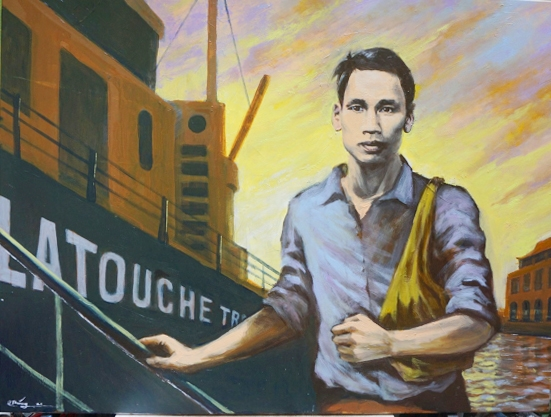
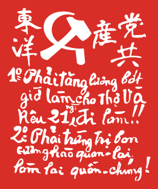
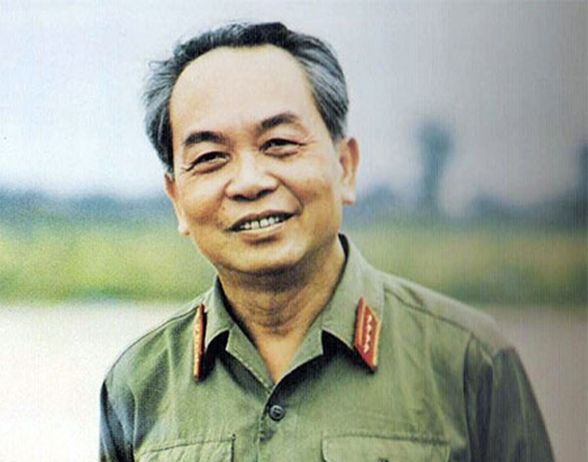
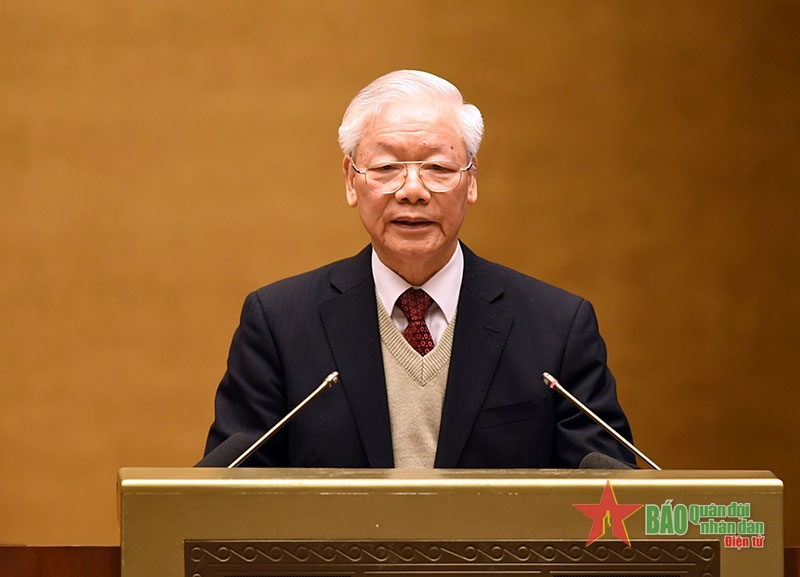
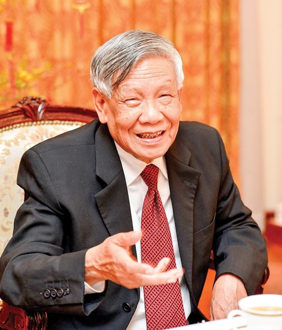
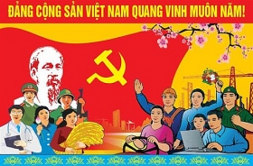
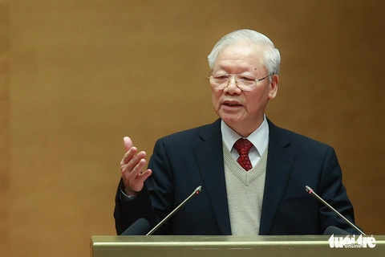

French forces captured Saigon, marking the start of colonial rule in Vietnam.
1911-1917
Ho Chi Minh travels abroad, exposed to socialist ideas
Ho Chi Minh worked on ships, visiting various countries and learning about different political ideologies.

1920
Ho Chi Minh joins French Communist Party
Ho Chi Minh became a founding member of the French Communist Party, solidifying his commitment to communist ideals.
1925
Vietnamese Revolutionary Youth League founded
This organization aimed to unite Vietnamese youth in the struggle against French colonialism.
1929
Three separate communist organizations form in Vietnam
These groups laid the groundwork for a unified communist movement in Vietnam.
February 3, 1930
Vietnamese Communist Party officially founded
Ho Chi Minh presided over a meeting in Hong Kong to unite the three communist organizations into a single party.
October 1930
Renamed Indochinese Communist Party (ICP)
The party expanded its scope to include all of French Indochina, including Laos and Cambodia.

1941
Viet Minh established under ICP leadership
The League for the Independence of Vietnam (Viet Minh) was formed to fight against both Japanese occupation and French colonialism.
September 2, 1945
Ho Chi Minh declares independence; First Indochina War begins
Following Japan's surrender in World War II, Ho Chi Minh declared the independence of Vietnam, leading to conflict with returning French forces.
Role in the Struggle for Independence
1. Viet Minh Front (est. 1941):
Created broad nationalist coalition led by communists
Mobilized diverse groups for independence struggle
2. World War II (1941-1945):
Led resistance against Japanese occupation
Built popular support and military capabilities
3. August Revolution (1945):
Orchestrated nationwide uprising after Japan's surrender
Seized power and declared independence
4. First Indochina War (1946-1954):
Led military and political struggle against French forces
Cultivated international support, especially from China and USSR
5. Geneva Conference (1954):
Negotiated end of French colonial rule
Secured control of North Vietnam
6. Reunification Efforts (1954-1975):
Supported communist forces in South Vietnam
Led North Vietnam in conflict against US-backed South
7. Vietnam War:
Directed military and political strategies against South Vietnam and US forces
Achieved final victory and national reunification in 1975
Key Founding Figures
Ho Chi Minh
Pham Van Dong

Vo Nguyen Giap
Le Duan
Truong Chinh
×
Ho Chi Minh (1890-1969)
Most prominent founding figure and national hero. Born as Nguyen Sinh Cung, used various aliases including Nguyen Ai Quoc. Traveled extensively, exposed to communist ideologies abroad. Founded Vietnamese Communist Party in 1930. Led Vietnam's independence movement and became first president of North Vietnam. Revered as "Uncle Ho" and symbol of Vietnamese nationalism.
×
Pham Van Dong (1906-2000)
Close associate of Ho Chi Minh. One of the founding members of the Indochinese Communist Party. Served as Prime Minister of North Vietnam and later unified Vietnam.
×
Vo Nguyen Giap (1911-2013)
Military leader and strategist. Key figure in the fight against French and American forces. Led the Viet Minh forces to victory at Dien Bien Phu in 1954.
×
Le Duan (1907-1986)
Rose to prominence during the resistance against French rule. Became General Secretary of the party after Ho Chi Minh's death. Played crucial role in the reunification of Vietnam.
×
Truong Chinh (1907-1988)
Early member of the communist movement. Served as General Secretary of the party and later as President. Known for his contributions to party ideology and land reform policies.
Organizational Structure and Governance: "Reverse Pyramid structure"
National Party Congress
Central Committee
Politburo
General Secretary
×
National Party Congress
The National Party Congress is the highest authority within the organizational structure of the Vietnamese Communist Party (VCP). It plays a crucial role in shaping the party's policies and leadership.
Function and Importance:
Supreme decision-making body of the VCP
Sets party policies and direction for the next five years
Elects the Central Committee and other key party organs
Approves changes to party statutes and ideology
Frequency:
Convenes every five years
Special congresses can be called in extraordinary circumstances
Composition:
Delegates from all levels of the party structure
Typically 1,500 to 1,600 delegates
Represents party members from across Vietnam
Key Activities:
Reviews party work since the last congress
Discusses and approves socio-economic development plans
Debates and adopts resolutions on major policy issues
Elects new Central Committee members
Indirectly selects Politburo members and General Secretary
Preparation:
Extensive planning and discussion at lower levels before the congress
Draft documents circulated for feedback within the party
Historical Significance:
Each congress marks a distinct period in Vietnam's political history
Often associated with major policy shifts or leadership changes
×
Central Committee
The Central Committee is a crucial component of the Vietnamese Communist Party's (VCP) organizational structure, serving as the main decision-making body between National Party Congresses.
Function and Role:
Sets party policy and direction between National Party Congresses
Elects the Politburo and Secretariat
Nominates candidates for top government positions
Oversees implementation of party resolutions
Composition:
Typically 180-200 full members
Additional alternate (non-voting) members
Represents diverse sectors: party officials, government leaders, military officers, provincial chiefs, and others
Selection Process:
Elected by the National Party Congress
Members serve five-year terms
Combination of new members and re-elected incumbents
Meeting Frequency:
Plenums (full meetings) held 1-2 times per year
Special sessions can be called if needed
Key Responsibilities:
Approving major policy decisions
Discussing and resolving significant national issues
Monitoring the work of the Politburo and Secretariat
Appointing heads of central-level party organizations
×
Politburo
The Politburo is the highest decision-making body within the Vietnamese Communist Party (VCP) and plays a crucial role in shaping Vietnam's policies and governance.
Function and Role:
Supreme decision-making authority between Central Committee plenums
Sets day-to-day policy direction for the party and government
Makes key decisions on domestic and foreign policy issues
Oversees implementation of party resolutions and policies
Composition:
Typically consists of 15-19 members
Includes the most powerful and influential party leaders
Members often hold concurrent high-ranking government or party positions
×

General Secretary
The General Secretary is the highest-ranking official in the Vietnamese Communist Party (VCP) and, by extension, the most powerful political figure in Vietnam.
Role and Responsibilities:
Head of the Communist Party of Vietnam
Chairs meetings of the Politburo and Secretariat
Oversees party affairs and ideology
Shapes overall policy direction for the country
Represents the party in international communist and diplomatic affairs
Powers:
Sets agenda for Politburo and Central Committee meetings
Influences key appointments in party and government
Final say in major policy decisions
Plays crucial role in maintaining party unity and discipline
Vietnam Communist Party Factionalism
Inception
Factionalism has been a feature of the Vietnam Communist Party (VCP) since its inception.
1986: Doi Moi Reforms
Factionalism intensified after the Doi Moi reforms of 1986.
Post-Le Duan Era
Factionalism became more visible in the post-Le Duan era (after 1986).
Key Areas of Contention
Economic policy: State control vs market liberalization
Foreign policy: Balancing relations between China and the West
Political reform: Degree of openness and pluralism
Pace and extent of anti-corruption efforts
Manifestations of Factionalism
Leadership selection at Party Congresses
Policy debates and implementation
Regional differences (North vs South Vietnam)
Generational divides within the party
Conservatives/Traditionalists
Emphasize party orthodoxy and socialist ideology
Favor state-led economic development
Prioritize relations with China and other socialist countries
Reformists/Pragmatists
Advocate for faster market reforms and global integration
More open to Western-style governance
Favor closer ties with Western countries, especially the US
Vietnam Communist Party Factional Struggle #1: 1990s
Do Muoi
Favored a cautious approach to economic reforms
Prioritized maintaining party control and socialist ideology
Skeptical of rapid market liberalization
VS

Le Kha Phieu
Advocated for faster economic reforms and party renovation
Pushed for more technocratic governance
Efforts to reduce corruption faced resistance
Key Aspects of This Struggle
Debate over the pace of Doi Moi economic reforms
Tension between ideological purity and pragmatic economic policies
Disagreements on how to handle the aftermath of the 1997 Asian Financial Crisis
Le Kha Phieu's efforts to reduce corruption faced resistance from entrenched interests
×
Outcome of the Struggle
Immediate Results
Le Kha Phieu's tenure was relatively short-lived (1997-2001)
His reform efforts were ultimately constrained by conservative resistance
Le Kha Phieu's attempts at party renovation and anti-corruption measures faced significant opposition
This resistance ultimately led to his removal in 2001
Le Kha Phieu was replaced by Nong Duc Manh in 2001
Manh was seen as a centrist, balancing between conservative and reformist factions
Key Points of the Outcome
Partial Reformist Victory: The selection of Le Kha Phieu initially appeared to be a win for reformists, but this victory proved to be limited and short-lived.
Continued Conservative Influence: Despite the leadership change, conservatives maintained significant power within the party and were able to effectively limit Le Kha Phieu's reform agenda.
Institutional Resistance: The struggle revealed the strong institutional resistance to rapid changes within the VCP.
Compromise Politics: The outcome demonstrated the VCP's tendency towards factional compromise rather than outright dominance of one faction.
Groundwork for Future Struggles: This period set the stage for more intense factional conflicts in the following decades.
2000s: Rise of Southern Reformists under Nong Duc Manh
Nong Duc Manh (General Secretary 2001-2011):
First ethnic minority (Tay) to lead the VCP
Positioned as a centrist, balancing conservative and reformist factions
His leadership coincided with the rise of southern reformists
Increased Influence of Southern Leaders
Many from the south were seen as more pro-business and reform-oriented
Figures like Nguyen Tan Dung (Prime Minister from 2006) gained prominence
Economic Policies
Acceleration of market-oriented reforms
Increased openness to foreign investment
Vietnam's accession to the WTO in 2007
Political Reforms
Limited experiments with intra-party democracy
Slightly more open public discourse, though still within strict limits
Factional Dynamics
Southern reformists pushed for faster economic liberalization
Conservatives sought to maintain party control and socialist orientation
Debates over how to manage growing wealth disparities and corruption
Foreign Policy
Gradual shift towards closer relations with the West, particularly the US
Ongoing debates about how to balance relations with China
Outcomes
This period saw significant economic growth and integration into the global economy
The groundwork was laid for more intense factional struggles in the 2010s
The rise of figures like Nguyen Tan Dung set the stage for later conflicts with the conservative faction

Click an event to see the corresponding image
Vietnam Communist Party Factional Struggle #2
Nguyen Tan Dung vs. Nguyen Phu Trong
Nguyen Tan Dung
Prime Minister from 2006 to 2016
Associated with a more reformist, pro-business approach
Known for promoting economic growth and international integration

Nguyen Phu Trong
General Secretary of the VCP since 2011
Seen as more conservative and ideologically orthodox
Emphasized party discipline and anti-corruption efforts
Main Points of Contention
Economic Policy
Dung's Position
Favored rapid economic liberalization and market-oriented reforms. Promoted faster integration into the global economy and encouraged foreign investment.
Trong's Position
Advocated for a more cautious approach, emphasizing state control and socialist principles in economic development. Stressed the need to maintain the party's guiding role in the economy.
Corruption
Dung's Approach
While publicly supporting anti-corruption efforts, Dung was accused of turning a blind eye to corruption within his networks. His administration was associated with several high-profile corruption scandals.
Trong's Campaign
Launched an extensive anti-corruption campaign that often targeted Dung's allies and associates. Emphasized the need to root out corruption to maintain the party's legitimacy and public trust.
Foreign Policy
Dung's Strategy
Pushed for closer ties with the West, particularly the United States. Sought to balance against China's influence by strengthening relationships with other powers.
Trong's Approach
Maintained a more balanced approach between China and the West, emphasizing Vietnam's traditional relationships. Cautious about over-reliance on any single foreign power.
Party Ideology
Dung's Perspective
Seen as more pragmatic and willing to adapt ideological stances to facilitate economic growth. Prioritized economic development over strict adherence to traditional ideology.
Trong's Stance
Emphasized adherence to traditional Marxist-Leninist principles and the primacy of the Communist Party. Stressed the importance of maintaining ideological purity while pursuing development.
Timeline of the Conflict
2012-2015: Growing tension between the two leaders becomes apparent
2016: 12th National Party Congress becomes a battleground for leadership succession
January 2016: Dung fails in his bid to become General Secretary, effectively ending his political career
April 2016: Dung steps down as Prime Minister
Outcome
The resolution of this factional struggle had significant implications for Vietnam's political landscape:
Trong emerges victorious, consolidating his power as General Secretary
Dung retires from politics, marking the end of his influence in the party
The party reaffirms its commitment to collective leadership and ideological orthodoxy
A renewed focus on party discipline and anti-corruption efforts becomes evident
Vietnam Communist Party: Relationship with Government
Overview
The Vietnam Communist Party (VCP) and the government are closely intertwined. The party maintains a leading role in all aspects of governance, as enshrined in the country's constitution.
Constitutional Basis
Article 4 of Vietnam's constitution establishes the VCP as the leading force in state and society
The party's leadership is described as fundamental to the political system
Overlap in Leadership
Top government positions are held by high-ranking party members
The "Four Pillars" of Leadership:
General Secretary of the VCP
President (head of state)
Prime Minister (head of government)
Chairperson of the National Assembly
Decision-making Process
Major policy decisions are first made within party organs (Politburo, Central Committee)
Government then implements these decisions through state apparatus
Party and Government Roles
Party's Role in Government
Party's Influence
Sets overall policy direction
Approves candidates for key government positions
Oversees government performance through party channels
Maintains parallel party committees at all levels of government
Government's Role
Government Functions
Implements party policies and directives
Manages day-to-day administration of the country
Proposes laws and regulations (subject to party approval)
Recent Trends
Increased emphasis on technocratic expertise in government
Efforts to streamline government operations while maintaining party oversight
Continued focus on maintaining the party's central role in governance